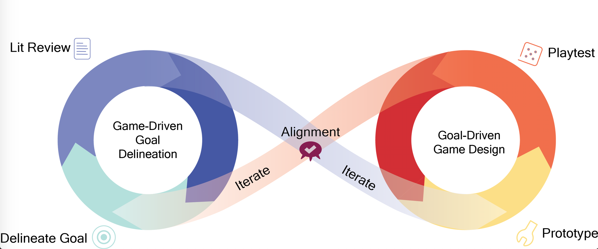

Tandem Transformational Game Design

Project Abstract:
In transformational game design, developing a clear, shared vision of how the player should change as a result of the game is a critical and ongoing process. However, multidisciplinary teams, particularly those comprised of both expert and novice designers and researchers, may experience barriers to a shared vision due to disparate vocabulary and theoretical frameworks. Tandem Transformational Game Design is a game design process framework. It encourages making to reflect and iterating on theory and related transformational goals in order to help align interdisciplinary team members and maximize their contributions.
Key Publications:
- Ali, S., To, A., Bai, Z., Holmes, J., Fath, E., Kaufman, G., Hammer, J. (2018). Transition from Goal Driven Game Design to Game Driven Goal Delineation in Tandem Transformational Game Design. In Proc. Meaningful Play 2018
- To, A., Fath, E., Zhang, E., Ali, S., Kildunne, C., Fan, A., & Kaufman, G. (2016). Tandem Transformational Game Design: A Game Design Process Case Study. In Proceedings of the International Academic Conference on Meaningful Play.